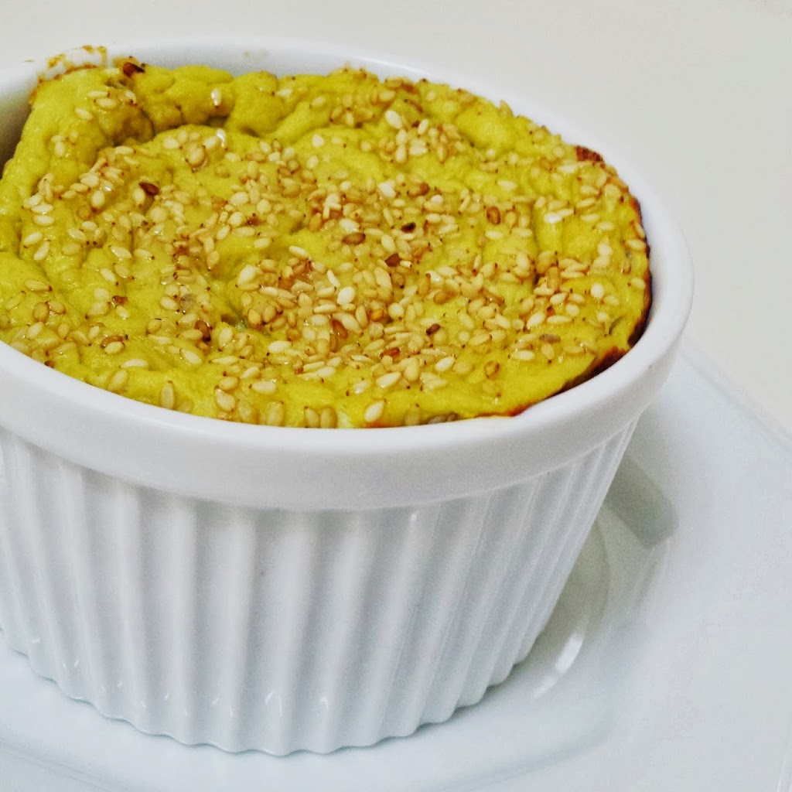

Panqueca nutritiva
Ingredientes:
200 ml de leite desnatado
1/2 xícara de chá (60g) de farinha de aveia
1/2 xícara de chá de farinha de quinoa (60g) ou trigo integral ou quinoa em flocos
1 ovo
*A receita pode ser alterada e usada uma xícara inteira de farinha integral ou outra.
Modo de preparo
Coloque tudo no pote do mixer e bata. Você também pode usar o liquidificador, mas eu acho o mixer bem mais prático. Agora que vem a técnica! Você pode ter um pouco de dificuldade para fazer panquecas bonitas na primeira vez, mas não desista. Prometo fazer um vídeo e postar aqui. Pré aqueça a frigideira antiaderente e unte-a com um pouquinho de óleo e tire o excesso com papel toalha. Espalhe a massa girando a frigideira até completá-la. Em menos de 1 minuto ela já pode ser virada. Com o auxílio de uma espátula, desgrude as bordas da massa e veja se ela já soltou. Vire a panqueca para cozinhar do outro lado.
Suflê falso
Ingredientes:
3 Claras
1 colher sopa Frango desfiado (refogado)
1 xíc.chá Brócolis cozidos (no vapor ou refogados)
1 colher sopa Queijo Cottage
11 colher sopa Creme de ricota light ou Requeijão zero gordura
1 colher café Fermento em pó
Sal e Pimenta a gosto
Gergelim para decorar
Modo de preparo
Bata todos os ingredientes (exceto gergelim) no liquidificador. Transfira a mistura para ramequins (potinho igual da foto) previamente untados com óleo de girassol/coco ou azeite de oliva Leve ao forno pré-aquecido em 200º graus até dourar. (O meu levou em aproximadamente 35 minutos) Prontinho!! Super prático, #fitdelideli e com ingredientes simples!!